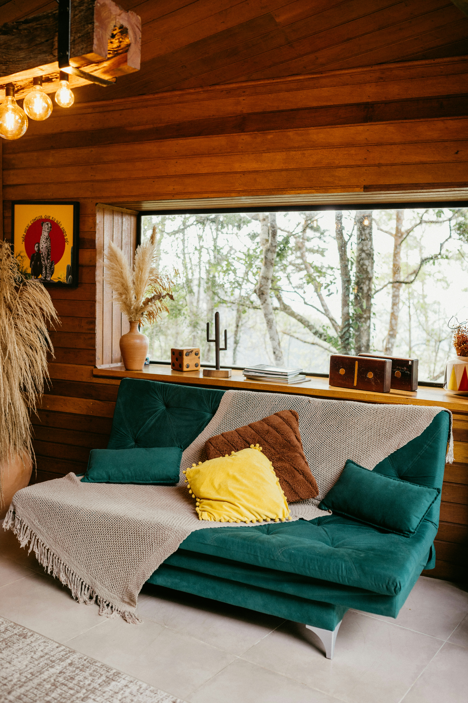
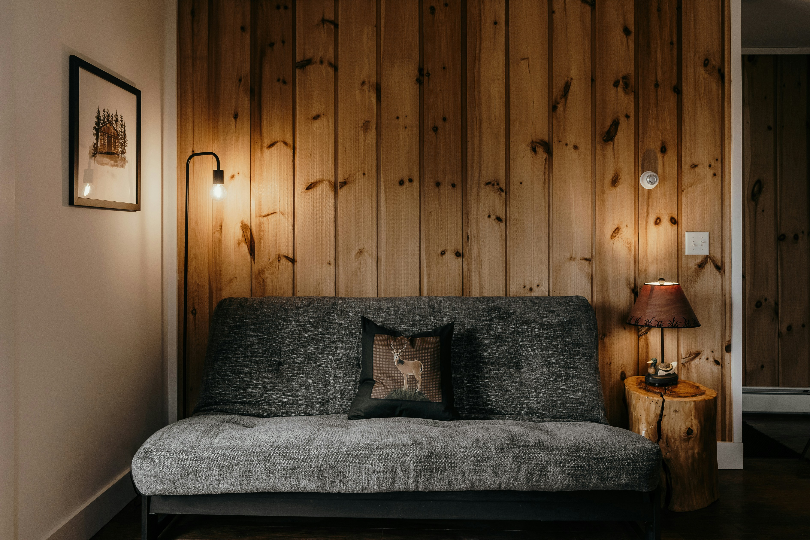
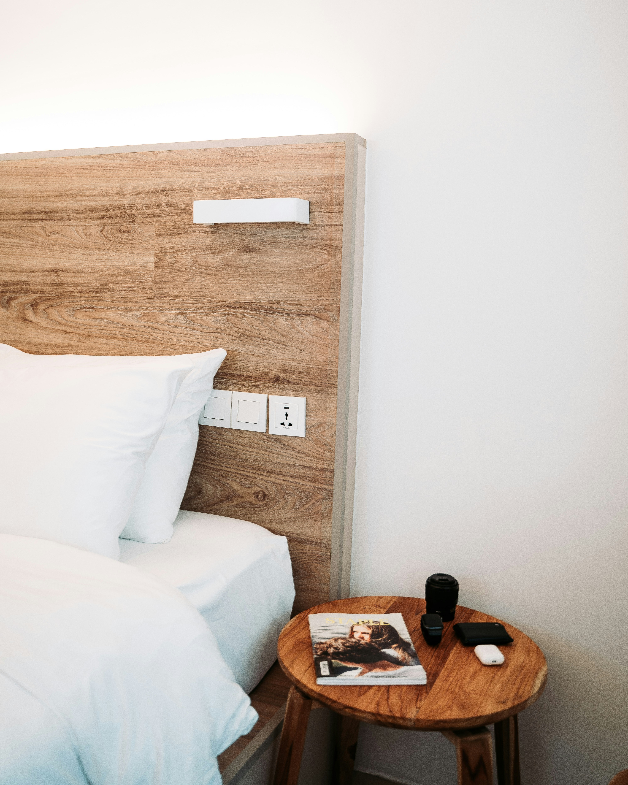
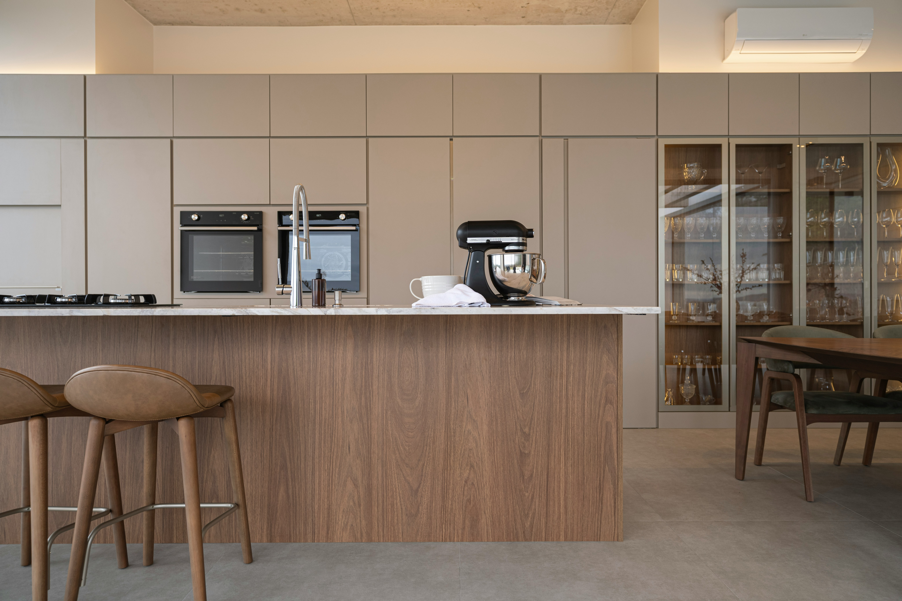
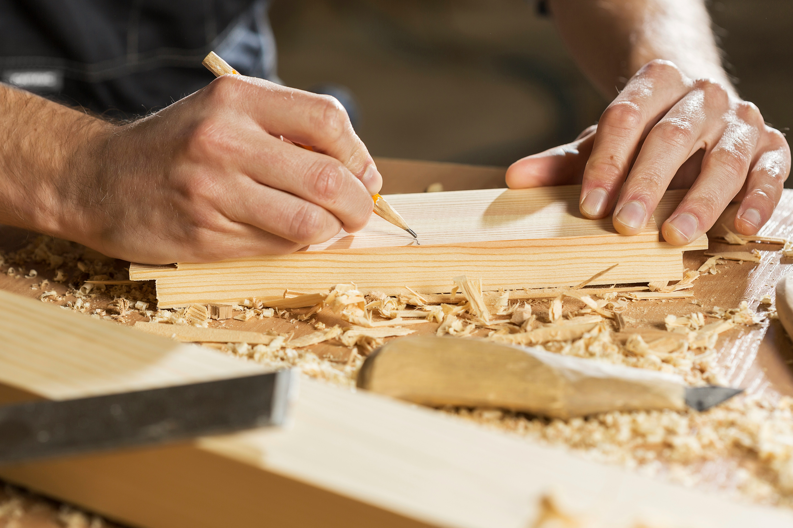
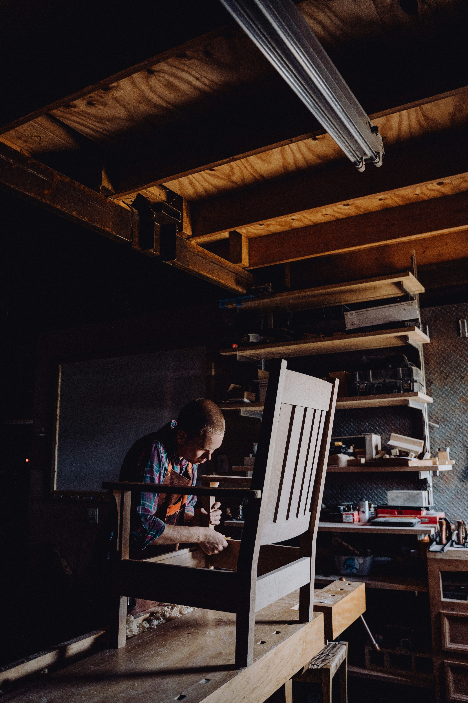
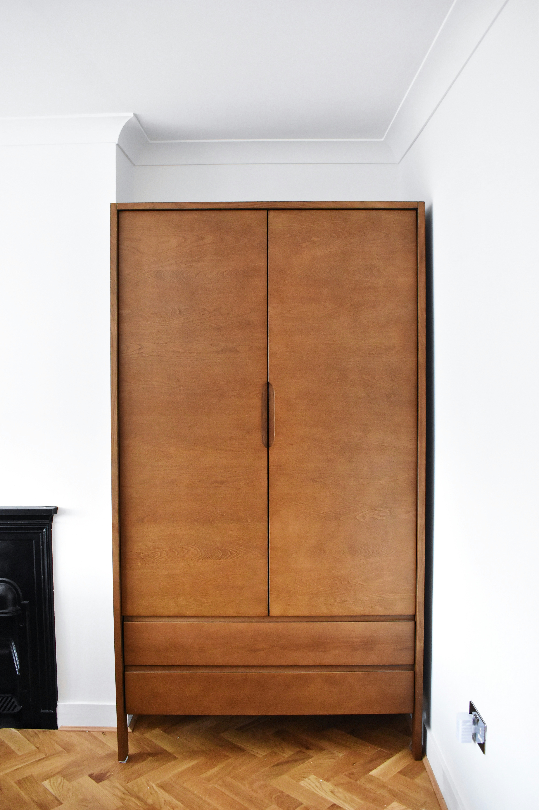

Punishte dhe showroom në Tiranë, që prej 1994
Mobilje që mësohen me shtëpinë tënde,
jo shtëpia me
to.
Familja Taci prodhon mobilje me dorë për ndenjëse, dhomë gjumi, kuzhinë dhe zyrë — të matura për hapësirën tënde, jo për katalogun.

Nga dera te dritarja
Një zanat, çdo dhomë e shtëpisë
Çdo koleksion dizajnohet veç, por ndan të njëjtin dru, të njëjtën dorë dhe të njëjtin kujdes për detajin.

Ndenjëse
Divane modulare, kolltukë dhe tavolina të mesme, të përshtatura sipas gjatësisë së saloni tuaj.
18 modele
Dhomë gjumi
Kryet e krevatit të veshura, komodina të vogla dhe dollapë me derë të fshehur, pa doreza metalike.
12 modele
Kuzhinë
Elementë modularë me fasadë druri masiv, banak dhe rafte të hapura sipas hapësirës suaj.
9 modele
Zyrë & studio
Tavolina pune, biblioteka dhe karrige që qëndrojnë në këmbë vetë, pa lidhje me murin.
7 modeleSi punojmë
Nga trungu te dhoma e ndenjes
Zgjedhja e drurit
Ahu, lisi dhe arra vijnë nga furnitorë vendas; çdo tra kontrollohet për venat dhe lagështinë përpara se të hyjë në punishte.
Matja e shtëpisë suaj
Vijmë me metër, jo me katalog — çdo cep, prizë dhe dritare regjistrohet përpara se të vizatohet skica.
Punimi me dorë
Bashkimet bëhen me tenone dhe zdrukthe, jo vetëm me ngjitës — kështu mobilja zgjat breza, jo sezone.
Montimi në shtëpinë tuaj
Ekipi ynë instalon dhe rregullon çdo pjesë në vend, dhe qëndron derisa gjithçka të ulet si duhet.

Koleksioni i vitit
Dollapi "Berat" — i menduar për shtëpi pa depo
I ndërtuar me arrë masive dhe rafte të rregullueshme, dollapi Berat përshtatet te tavani i çdo dhome — nga 220 deri 280 cm — pa lënë hapësirë të humbur sipër.

Klientët
Familjet që kanë mobiluar me ne
"Vinin çdo javë të matnin, jo vetëm një herë. Kur erdhi divani, u ul në qoshe sikur ishte bërë për atë mur."
Elona M. — Vorë
"Kuzhina jonë ka një kënd të çuditshëm prapa shkallëve. Taci na bëri elementët me matje, jo standard, dhe hyri si duhej."
Gerti K. — Tiranë
"Krevati i prindërve ende qëndron si i ri, 14 vjet më vonë. Tani po presim radhën për dhomën e djalit."
Sokol B. — Durrës
Ejani në showroom, ose na shkruani matjet
Zakonisht përgjigjemi brenda një dite pune. Nëse na vizitoni në punishte, mund të shihni drurin përpara se të zgjidhni.